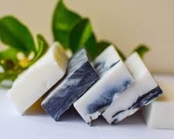
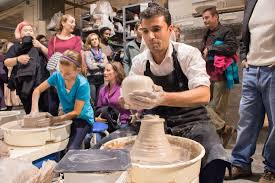
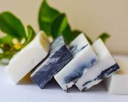
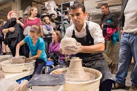
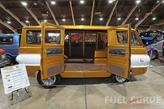
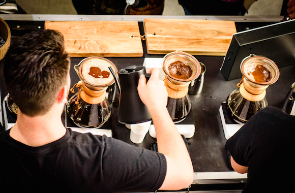
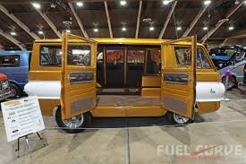
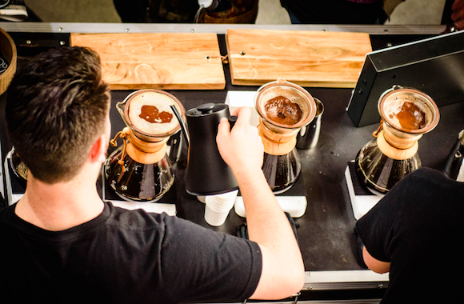

Fiber Festival:
Date: June 6 | Time: 10:30 AM to 5:30 PM
 



Come celebrate fiber arts and old time artisan skills with us! See the process of taking raw materials and turning them into fine works of art. Anything from raw wool to finished yarns, handmade soaps, pottery and so much more. In addition to their marketplace they offer a variety of workshops, from beginner to advanced levels, all led by skilled instructors helping to keep old and new crafts relevant today. While visiting the festival, consider taking one of these workshops to expand your knowledge and skillset!
Farmers Market:
Date: June 14 | Time: 8:00 AM to 8:00 PM
Join us for a vibrant, community-centered Farmers Market, where farm-fresh flavor meets small-town charm and local pride shines through every product. Browse an abundant selection of locally grown produce, including crisp apples, juicy berries, leafy greens, and heirloom tomatoes—each harvested at peak ripeness for maximum flavor and nutrition. Discover a variety of handcrafted preserves such as jams, jellies, pickles, and sauces, made in small batches with simple, wholesome ingredients that capture the essence of the season. For meat lovers, explore premium cuts of grass-fed beef, free-range chicken, heritage pork, and farm-fresh eggs—all responsibly raised by nearby farmers committed to sustainable and ethical practices. Whether you’re stocking your pantry, planning your next meal, or simply enjoying the festive atmosphere, the Farmers Market offers delicious, wholesome food and a chance to connect with the people who grow and make it.
Cars and Coffee:
Date: June 23 | Time: 3:00 PM to 11:00 PM
 



Start your engines and fuel your morning at Cars and Coffee, a casual community event where car enthusiasts and caffeine lovers come together to share their passion. Whether you drive a classic muscle car, a sleek import, or a modern supercar, all vehicles and visitors are welcome to park, chat, and admire an eclectic lineup of rides. Enjoy freshly brewed coffee, swap stories with fellow gearheads, and connect with local drivers in a relaxed, family-friendly atmosphere. It’s the perfect way to kick off your weekend—one cup and one car at a time.